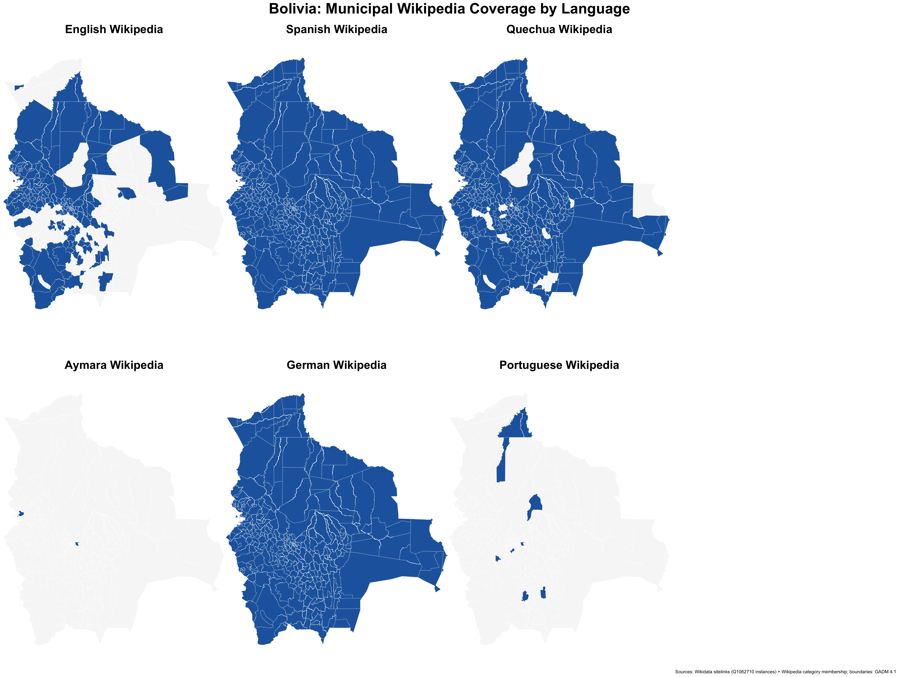

Code
library(tidyverse)
library(sf)
library(patchwork)
library(httr)
library(jsonlite)
library(rvest)
library(wikitools)
source("wikidata_presence_matrix.R")
source("R/get_wikidata_instances.R")This document maps the completeness of Wikipedia coverage for Bolivia’s 336 official municipalities across six Wikipedias: English, Spanish, Quechua, Aymara, German, and Portuguese. Coverage is defined as having a Wikipedia article linked from Wikidata via sitelinks.
The maps are designed to support Wikipedia editors who want to identify municipalities lacking articles in one or more languages. They connect to the deeper article-quality analysis in bolivia-municipality-wikipedia.qmd, which examines article content and structure on English Wikipedia.
library(tidyverse)
library(sf)
library(patchwork)
library(httr)
library(jsonlite)
library(rvest)
library(wikitools)
source("wikidata_presence_matrix.R")
source("R/get_wikidata_instances.R")We query Wikidata for all items that are instances of municipality of Bolivia (Q1062710) and build a presence matrix indicating which Wikipedia language editions have an article for each municipality.
Results are cached to data/bo_municipality_wiki_presence.rds so that subsequent renders do not repeat the API calls.
presence_cache <- "data/bo_municipality_wiki_presence.rds"
if (file.exists(presence_cache)) {
bo_municipality_wiki_presence <- readRDS(presence_cache)
} else {
bo_municipality_wiki_presence <- wikidata_instance_wikipedia_presence(
class_qid = "Q1062710", # municipality of Bolivia
languages = NULL, # auto-discover all languages present
limit = 500,
batch_size = 20
)
saveRDS(bo_municipality_wiki_presence, presence_cache)
}We retrieve the INE municipal code (property P14142) for each municipality. These 6-digit codes (e.g. 010101) allow us to join Wikidata entities to the GADM boundary file via a pre-built crosswalk.
ine_cache <- "data/municipalities_wd_ine.rds"
if (file.exists(ine_cache)) {
municipalities_wd_ine <- readRDS(ine_cache)
} else {
municipalities_wd_ine <- get_wikidata_instances(
class_qid = "Q1062710",
property = "P14142",
property_names = "ine_code",
languages = c("en", "es"),
limit = 500,
batch_size = 20
)
saveRDS(municipalities_wd_ine, ine_cache)
}As a second strategy we pull pages directly from Wikipedia categories. This catches articles that exist and are correctly categorised but whose Wikidata item lacks a sitelink — a common gap on the Spanish and Quechua editions.
The category structures differ by language edition:
en): flat — all municipalities in one category.qu): mixed — some pages are directly in Munisipyu (Buliwya) and others in its subcategories; we fetch both.pt): flat — one category, relatively sparse.Spanish uses a different approach (see below): the curated table on Anexo:Municipios de Bolivia lists every article with its INE code, letting us join directly without going through Wikidata QIDs.
muni_cat_specs is the canonical registry; add entries for other editions as needed. For each article found, the Wikidata QID is resolved via the MediaWiki API and merged into the presence matrix.
# Helper: collect all article titles from a category, optionally descending
# one level into its subcategories.
# - include_self : include pages directly in `category`
# - include_subcats : also collect pages from every subcategory
# Subcategory titles returned by the API carry a namespace prefix
# (e.g. "Categoría:", "Katiguriya:"); strip it before the recursive call
# because get_wp_category_members() adds the correct prefix internally.
.get_muni_cat_pages <- function(category, lang,
include_self = TRUE,
include_subcats = FALSE) {
empty <- tibble(pageid = integer(0), ns = integer(0), title = character(0))
pages <- if (include_self) {
get_wp_category_members(category, type = "page", lang = lang)
} else {
empty
}
if (include_subcats) {
subcats <- get_wp_category_members(category, type = "subcat", lang = lang)
if (nrow(subcats) > 0) {
sub_pages <- map_dfr(subcats$title, function(full_title) {
# Strip local namespace prefix ("Categoría:", "Katiguriya:", etc.)
cat_base <- sub("^[^:]+:", "", full_title)
get_wp_category_members(cat_base, type = "page", lang = lang)
})
pages <- bind_rows(pages, sub_pages)
}
}
distinct(pages, title, .keep_all = TRUE)
}
# Per-language fetch specs:
# category : top-level category name (no namespace prefix needed)
# include_self : collect pages directly in that category
# include_subcats: also collect pages from each subcategory
muni_cat_specs <- list(
en = list(category = "Municipalities of Bolivia",
include_self = TRUE, include_subcats = FALSE),
qu = list(category = "Munisipyu_(Buliwya)",
include_self = TRUE, include_subcats = TRUE),
pt = list(category = "Municípios da Bolívia",
include_self = TRUE, include_subcats = FALSE)
)
cat_cache <- "data/bo_municipality_cat_presence.rds"
if (file.exists(cat_cache)) {
cat_presence <- readRDS(cat_cache)
} else {
cat_rows <- imap(muni_cat_specs, function(spec, lang) {
message("Fetching ", lang, ".wikipedia: ", spec$category, " ...")
members <- .get_muni_cat_pages(
spec$category, lang,
include_self = spec$include_self,
include_subcats = spec$include_subcats
)
if (nrow(members) == 0) {
message(" (empty — skipping)")
return(tibble(qid = character(0)))
}
message(" ", nrow(members), " pages; resolving Wikidata QIDs ...")
info <- get_page_info_batch(members$title, lang = lang)
tibble(qid = na.omit(info$wikidata_qid)) |>
mutate(!!rlang::sym(lang) := 1L)
})
# Full-join per-language tibbles; NA → 0 where a QID is absent for a language
non_empty <- keep(cat_rows, ~ nrow(.x) > 0)
cat_presence <- if (length(non_empty) == 0) {
tibble(qid = character(0))
} else if (length(non_empty) == 1) {
non_empty[[1]]
} else {
reduce(non_empty, full_join, by = "qid") |>
mutate(across(-qid, ~ replace_na(.x, 0L)))
}
saveRDS(cat_presence, cat_cache)
}The Spanish Wikipedia has a curated page — Anexo:Municipios de Bolivia — that lists every municipality with its Código INE and a direct link to the article. Because the INE code is already present, we can join directly to the GADM boundaries without resolving Wikidata QIDs. Every row in the table carries an article link, so presence equals membership in the table.
es_cache <- "data/bo_es_ine_presence.rds"
if (file.exists(es_cache)) {
es_ine_presence <- readRDS(es_cache)
} else {
page <- read_html(
"https://es.wikipedia.org/w/index.php?title=Anexo:Municipios_de_Bolivia"
)
rows <- page |> html_node("table.wikitable") |> html_nodes("tr")
# Skip header row; extract INE code (col 1) and Nombre href (col 2)
es_ine_presence <- map_dfr(rows[-1], function(row) {
cells <- row |> html_nodes("td")
if (length(cells) < 2) return(NULL)
ine <- cells[[1]] |> html_text(trim = TRUE)
href <- cells[[2]] |> html_nodes("a") |> html_attr("href")
if (length(href) == 0 || !grepl("^\\d{6}$", ine)) return(NULL)
tibble(ine_code = ine, es_article = href[[1]])
}) |>
mutate(es = 1L)
message(nrow(es_ine_presence), " municipalities found in Anexo:Municipios_de_Bolivia")
saveRDS(es_ine_presence, es_cache)
}Take the union of the Wikidata sitelink and category-membership strategies for English, Quechua, and Portuguese. Spanish is handled separately via the Anexo table (INE-code join). Aymara uses Wikidata only.
cat_langs <- setdiff(names(cat_presence), "qid")
# Start from Wikidata data (excluding es, which comes from the Anexo table).
# Full-join category presence so QIDs found only in categories are also retained.
wd_data <- bo_municipality_wiki_presence$data |>
select(qid, any_of(c("en", "qu", "ay", "de", "pt")))
presence_combined <- wd_data |>
full_join(
cat_presence |> rename_with(~ paste0("cat_", .), .cols = -qid),
by = "qid"
)
# Union: for each language with a category counterpart, prefer 1 over 0/NA
for (lang in cat_langs) {
cat_col <- paste0("cat_", lang)
lang_sym <- rlang::sym(lang)
if (lang %in% names(presence_combined)) {
presence_combined <- presence_combined |>
mutate(!!lang_sym := pmax(.data[[lang]], .data[[cat_col]], na.rm = TRUE))
} else {
# Language present only in category data — add the column
presence_combined <- presence_combined |>
mutate(!!lang_sym := replace_na(.data[[cat_col]], 0L))
}
}
presence_combined <- presence_combined |> select(-starts_with("cat_"))
# Diagnostic: articles added by the category strategy
lang_labels <- c(en = "English", es = "Spanish", qu = "Quechua",
ay = "Aymara", de = "German", pt = "Portuguese")
gains <- map_dfr(intersect(cat_langs, setdiff(names(wd_data), "qid")), function(lang) {
tibble(
language = lang,
Wikipedia = lang_labels[lang],
wikidata_only = sum(wd_data[[lang]] == 1L, na.rm = TRUE),
combined = sum(presence_combined[[lang]] == 1L, na.rm = TRUE),
gained = sum(
presence_combined[[lang]] == 1L &
(is.na(wd_data[[lang]]) | wd_data[[lang]] == 0L),
na.rm = TRUE
)
)
})
gains |>
select(Wikipedia, `Via Wikidata` = wikidata_only,
`Combined` = combined, `Added by category` = gained) |>
knitr::kable(caption = "Articles added by the category-membership strategy")| Wikipedia | Via Wikidata | Combined | Added by category |
|---|---|---|---|
| English | 193 | 194 | 1 |
| Quechua | 323 | 325 | 0 |
| Portuguese | 9 | 10 | 1 |
We join the presence matrix to INE codes, then match to GADM boundaries through the pre-built lookup table.
gadm_sf <- st_read("data/gadm41_BOL_3.gpkg", layer = "ADM_ADM_3",
quiet = TRUE) |>
select(NAME_1, NAME_3, geom)
gadm_lookup <- readRDS("data/gadm_lookup.rds")
# Join presence matrix → INE codes → GADM crosswalk → spatial boundaries.
# en/qu/ay/pt come from presence_combined (Wikidata + category union), joined
# via Wikidata QID → INE code. Spanish comes from es_ine_presence joined
# directly on INE code, bypassing QID resolution.
map_data <- gadm_sf |>
inner_join(
gadm_lookup |> select(gadm_dep, gadm_mun, cod.mun),
by = c("NAME_1" = "gadm_dep", "NAME_3" = "gadm_mun")
) |>
left_join(
presence_combined |>
select(qid, any_of(c("en", "qu", "ay", "de", "pt"))) |>
left_join(municipalities_wd_ine |> select(qid, ine_code), by = "qid"),
by = c("cod.mun" = "ine_code")
) |>
left_join(
es_ine_presence |> select(ine_code, es),
by = c("cod.mun" = "ine_code")
) |>
# es = 0 (not NA) for municipalities absent from the Anexo table
mutate(es = replace_na(es, 0L)) |>
mutate(
across(c(en, es, qu, ay, de, pt),
~ factor(case_when(
.x == 1L ~ "Has article",
.x == 0L ~ "No article",
TRUE ~ "Not in Wikidata"
), levels = c("Has article", "No article", "Not in Wikidata")))
)# Count municipalities with / without an article per Wikipedia
coverage_summary <- map_data |>
st_drop_geometry() |>
summarise(across(c(en, es, qu, ay, de, pt), list(
has = ~ sum(.x == "Has article", na.rm = TRUE),
no = ~ sum(.x == "No article", na.rm = TRUE),
absent = ~ sum(.x == "Not in Wikidata" | is.na(.x), na.rm = TRUE)
))) |>
pivot_longer(everything(),
names_to = c("language", ".value"),
names_sep = "_") |>
mutate(
wikipedia = c(en = "English", es = "Spanish", qu = "Quechua", ay = "Aymara",
de = "German", pt = "Portuguese")[language],
pct_has = round(100 * has / (has + no + absent), 1)
) |>
select(wikipedia, has, no, absent, pct_has)
coverage_summary |>
rename(
Wikipedia = wikipedia,
`Has article` = has,
`No article` = no,
`Not in WD` = absent,
`% covered` = pct_has
) |>
knitr::kable(caption = "Municipality article coverage by Wikipedia language edition")| Wikipedia | Has article | No article | Not in WD | % covered |
|---|---|---|---|---|
| English | 192 | 147 | 0 | 56.6 |
| Spanish | 339 | 0 | 0 | 100.0 |
| Quechua | 323 | 16 | 0 | 95.3 |
| Aymara | 2 | 337 | 0 | 0.6 |
| German | 339 | 0 | 0 | 100.0 |
| Portuguese | 9 | 330 | 0 | 2.7 |
Colors indicate whether Wikidata links the municipality to a Wikipedia article in each language. Grey polygons are municipalities present in GADM but not matched through Wikidata.
presence_colors <- c(
"Has article" = "#2166ac",
"No article" = "#f7f7f7",
"Not in Wikidata" = "#aaaaaa"
)p_en <- make_presence_map(map_data, "en", "English Wikipedia")
p_es <- make_presence_map(map_data, "es", "Spanish Wikipedia")
p_qu <- make_presence_map(map_data, "qu", "Quechua Wikipedia")
p_ay <- make_presence_map(map_data, "ay", "Aymara Wikipedia")
p_de <- make_presence_map(map_data, "de", "German Wikipedia")
p_pt <- make_presence_map(map_data, "pt", "Portuguese Wikipedia")
p_lg <- make_legend_panel(map_data)
# Flat layout: legend in row 1 col 4, spacer in row 2 col 4
design <- "
ABCD
####
EFG#
"
p_en + p_es + p_qu + p_lg +
p_ay + p_de + p_pt +
plot_layout(design = design, heights = c(1, 0.08, 1)) +
plot_annotation(
title = "Bolivia: Municipal Wikipedia Coverage by Language",
caption = "Sources: Wikidata sitelinks (Q1062710 instances) + Wikipedia category membership; boundaries: GADM 4.1",
theme = theme(
plot.title = element_text(face = "bold", size = 28, hjust = 0.5)
)
)
Municipalities with no article in any of the four languages are the highest-priority targets for new articles. The table below lists them, ordered by INE code.
map_data |>
st_drop_geometry() |>
filter(
en == "No article",
es == "No article",
qu == "No article",
ay == "No article"
# de == "No article",
# pt == "No article"
) |>
left_join(
municipalities_wd_ine |> select(ine_code, label_en, label_es),
by = c("cod.mun" = "ine_code")
) |>
select(
`INE code` = cod.mun,
`Name (EN)` = label_en,
`Name (ES)` = label_es,
English = en,
Spanish = es,
Quechua = qu,
Aymara = ay,
German = de,
Portuguese = pt
) |>
arrange(`INE code`) |>
knitr::kable(caption = "Municipalities with no article in English, Spanish, Quechua, or Aymara")| INE code | Name (EN) | Name (ES) | English | Spanish | Quechua | Aymara | German | Portuguese |
|---|
The deeper analysis of existing English Wikipedia articles — article length, citations, infobox completeness, and census data quality — is in bolivia-municipality-wikipedia.qmd, with results saved to data/bolivia_municipality_wikipedia.rds.
Future work here will:
bolivia_municipality_wikipedia.rds) to the coverage maps